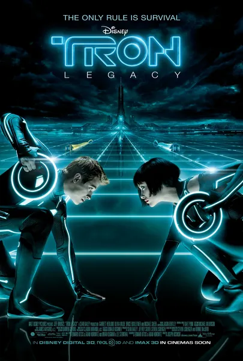

Трон: Наследие
Tron: Legacy
2010
Приключения, Фантастика
Двадцать лет спустя: Сэм, сын Флинна, получает сигнал от того самого игрового автомата и попадает в «Сетку» — виртуальный мир, где когда-то исчез его отец. Вместо отца он встречает его цифровую копию — Клу, который довел систему до совершенства через тотальную унификацию, а также сталкивается с изгнанными программами и гладиаторскими боями, выросшими из гонок на арене. Визуально это самый красивый фильм о компьютерном мире: неоновая архитектура в эстетике Daft Punk и вопрос о том, что делает систему идеальной — порядок или свобода.
Описание на английском
Twenty years on: Flynn's son Sam gets a signal from the same arcade machine and goes into the Grid where his father vanished. Instead of his father he finds his digital copy, Clu, who has perfected the system through total uniformity — plus exiled programs and arena races turned gladiator games. Visually the most beautiful film about a computer world: Daft Punk-era neon architecture and the question of what makes a system perfect — order or freedom.